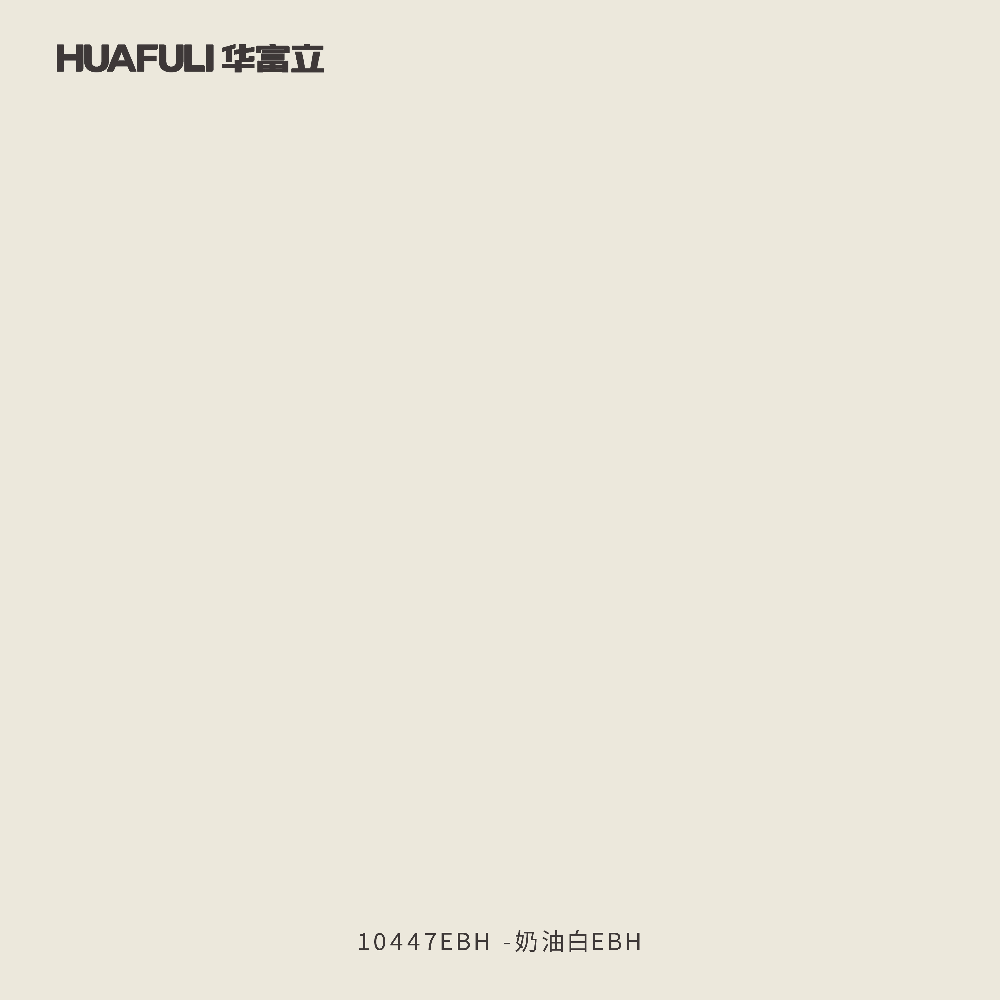
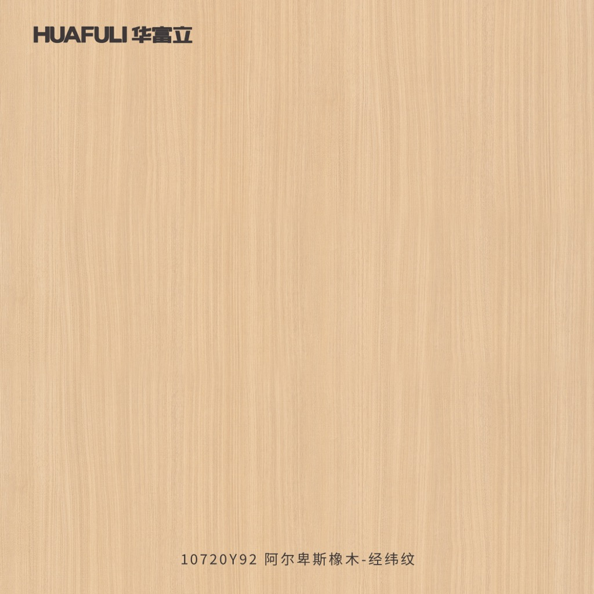
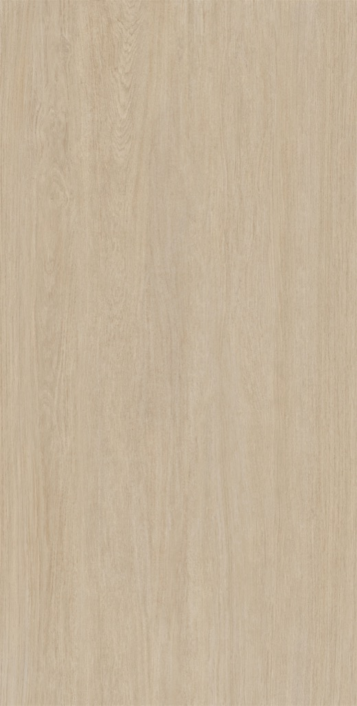
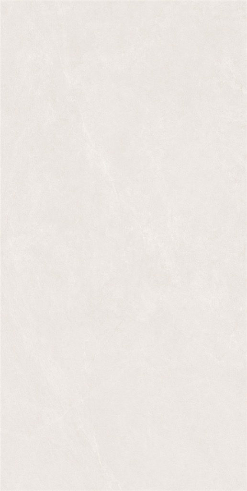
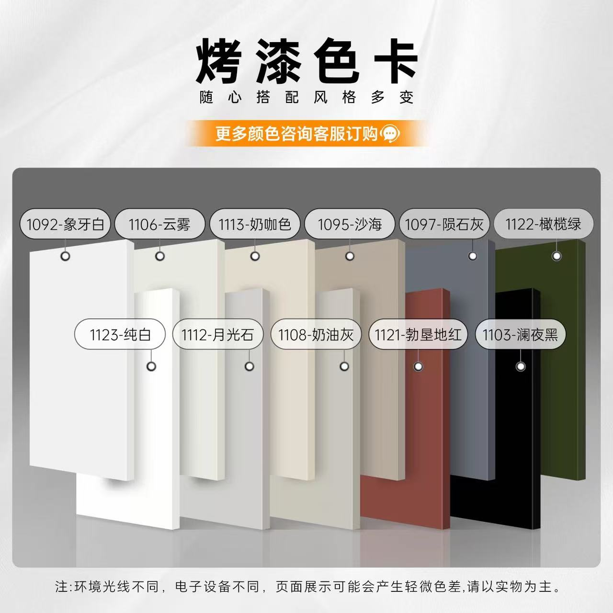
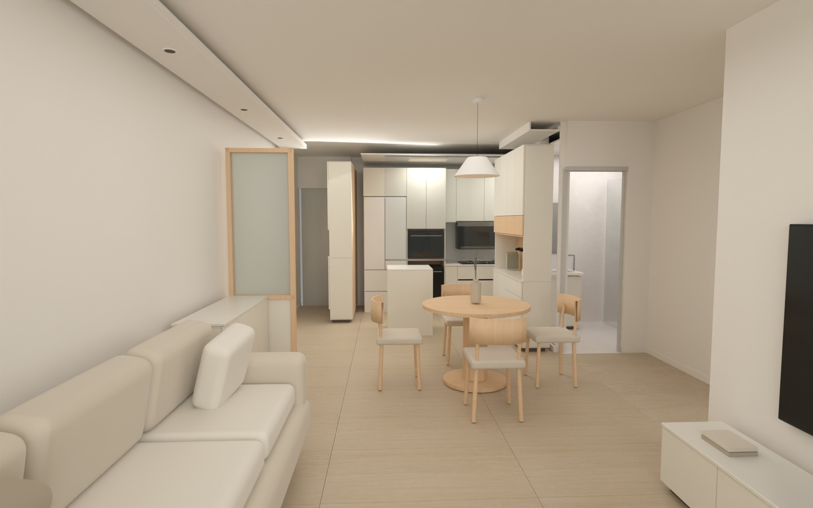

BAKED DAYLIGHT / 01
厨房、两卧、卫浴、阳台与公共区连通。效果图与自由漫游，来自同一套三维场景。
正在载入精细模型与烘焙贴图
电脑：WASD移动，按住画面拖动环顾。手机：左下摇杆移动，在其他位置滑动环顾。视点菜单可快速定位，途中仍可自由行走。俯瞰可拖动旋转、缩放；若卡顿，点击“高清”切为“流畅”。
全屋：客餐厅、玄关、厨房、主卧、次卧、卫生间、阳台。柜体独立门板、2毫米板缝与边缘倒角；石材薄边；沙发和床品软包；曲木餐椅；窗帘褶皱；三台挂机导风板和栅片。Cycles计算日光反弹与接触阴影，再烘焙到网页模型。效果图使用同一个源场景。
所有房间都可进入，未因画质深化而隐藏。厨房保留708冰箱净位＋650电器塔＋200留台＋950灶柜＋542备菜柜＋600转角＝3650；主卧1800衣柜、1500箱体床；次卧1200高床与横向阶梯；阳台250工具＋700盆柜＋700洗烘组合。玻璃和微小高光仍有轻量化处理；当前只有日景。
柜面取华富立10447EBH奶油白官方色板；木色取A10720Y92阿尔卑斯橡木；地面取萨米特蜜杏原图，按600×1200砖表达；菱花白墙顶电子参考值#F3F0EA。美心1112月光石取用户色卡近似，非官方色值。石材、沙发布和椅子是当前建议，未指定的品牌与型号不作定版。
下方为无场景灯光的材料参考。屏幕、白平衡和真实光源都会改变观感，不能替代实体小样。奶芙米用于厨房墙面、卫生间墙面与地面，蜜杏用于厨房与卧室地面。





客厅2匹内机1080×330×249毫米，按用户尺寸；机底暂2100、净高暂2650，机顶净空220毫米，挂机上方不下吊。安装图要求左右和顶部≥150、机底离地≥2000、墙孔顶部距屋顶≥500毫米，孔位和管路未绘制。2匹外机860×551×331已记录，外机位未确认；两卧1.5匹855×328×219已分别加入，机底暂2100，机顶净空222毫米。
局部350宽薄边底高暂2550，客厅柔光吸顶灯、餐桌小吊灯；吊顶R01尚待确认，层高和梁底必须复尺。查看厨房/大厅吊顶试稿 ↗
户型尺寸链未实测闭合。水槽仅700外宽已确认，盆深与开孔形状示意；洁具、洗烘、次卧护栏与阶梯细部未取得完整厂家参数，模型不代表安全或安装已核准。燃气热水器机位与独立排烟未确认，不擅自画进封闭柜。模型及简化碰撞不作施工、安装净距或通行验收依据；软装未定采购型号。不采集位置、麦克风或相机，不需要VR头显。
Blender Cycles → glTF → Three.js · 2026.10.30
与漫游使用同一套三维模型。网页中可选择“效果图同机位”对照；玻璃和细微高光在网页版做了轻量化。

全屋精细漫游 · 吊顶与软装为当前设计建议，非施工定稿